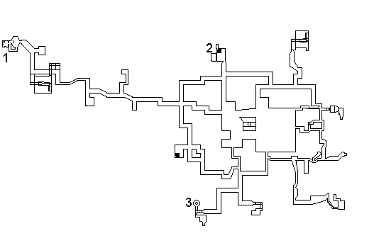

| Sewers of Free Haven | |
| 1. | This is where you will find the Prince of Thieves that Lord Stone in White Cap is looking for. |
| 2. | This is the great tressure room of the sewer, some say the key is randomly placed that opens this door. |
| 3. | This room is a transport room to the Supreme Temple of Baa. |
Leave us a messagemgrounds@hotmail.com